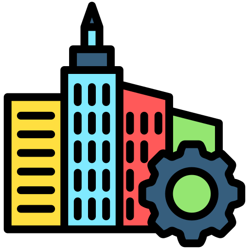
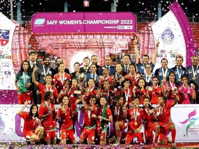

Bangladesh 2.0

Pillars of "Bangladesh 2.0"
Innovation
The statistical confidence with interval for the ranking of Bangladesh in the GII 2022 is between ranks 93 and 110.

Sustainability
The Government of Bangladesh has already approved measures and will commit resources to protect, preserve, and enhance the ecological sustainability.

Infrastructure
The Government has recently completed building the 6.15 km Padma Bridge at a cost of US$3.6 billion, connecting the less developed.

Empowerment
the process of giving people the power and control to make decisions, solve problems, and take initiative
The Vision of Future
Bangladesh 2.0 aims to redefine the nation’s trajectory by embracing cutting-edge technology, promoting inclusive growth, and ensuring sustainability. With initiatives in renewable energy, digital transformation, and robust infrastructure, the country is set to become a global model of development.

Digital Transformation
Creating a nationwide digital ecosystem to enhance connectivity and access to services for all citizens.

Green Energy
Investments in solar and wind energy help us to be ensure a sustainable and eco-friendly future.
Modern Infrastructure
Building state-of-the-art infrastructure to support economic growth, plant and global competitiveness.
"Our job is to clean it up and reform it. We need to make a good start. We need the support from all of you to make that happen," he said while addressing a reception on the sidelines of the UN General Assembly (UNGA) at the UN headquarters on Tuesday evening (New York time), reports UNB. So, please help them, support them. So that their dreams come true. And, this is a responsibility we take together. And, you will be with us," he said holding Clinton's hand.As the two young people went on the stage, Prof Yunus said they shook the entire country with their speeches and their commitment. "They said 'you can kill us, but we are not giving up'. When they speak and the language they use inspire young people across the world, he said, adding, "Let's give them a big applause. They are the ones creating the new version of Bangladesh. Let's wish them all success."
Dr. Muhammad Yunus
Chief Adviser of the People's Republic of BangladeshYour Opinion Matters
|
QuestionSelect Your Opinion
|
|
|---|---|
| Do you believe Bangladesh is on the right path toward becoming a developed nation? |
|
| Do you believe Bangladeshi Web Developer Will rise around and Make a Good Impact? |
|
| Do you believe Bangladesh recover from poverty, corruption soon? |
|
| Do you believe Bangladesh is on the right path toward becoming a developed nation? |
|---|
|
|
| Do you believe Bangladeshi Web Developer Will rise around and Make a Good Impact? |
|
|
| Do you believe Bangladesh recover from poverty, corruption soon? |
|
|
Recent News
Bangladesh 2.0 aims to redefine the nation’s trajectory by embracing cutting-edge technology, promoting inclusive growth, and ensuring sustainability. With initiatives in renewable energy, digital transformation, and robust infrastructure, the country is set to become a global model of development.

Bangladesh Launches New Satellite
 Date: 05/01/2025Time: 10.25 PM
Date: 05/01/2025Time: 10.25 PM
Not until the creation and maintenance of decent conditions of life for all people are recognized and accepted as a common obligation of all people and all countries—not until then shall we, with a certain degree of justification, be able to speak of humankind as civilized.
A year of contrasts in Bangladesh cricket
Date: 07/09/2024Time: 09.25 AM
As for the year that is winding down, it was neither an overarching triumph nor a debilitating failure. The stench of mediocrity was present, but so was vivacious tenacity. Above all, it was an interesting year in cricket for Bangladesh.

Date: 24/12/2024Time: 11.23 PM
Winning the second SAFF Women's Championship
Date: 24/12/2024Time: 11.23 PM
Till the 80th minute, the scores were tied at a goal each. Both Bangladesh and Nepal fought brilliantly till that point; however, after Nepal equalized, they began to pose more of a threat in the attacking third. Two attacks from Sabitra Bhandari exposed Bangladesh's deteriorating physicality, but somehow they held on. Then, a quick throw-in changed everything.
Donate Today
Bangladesh 2.0 aims to redefine the nation’s trajectory by embracing cutting-edge technology, promoting inclusive growth, and ensuring sustainability. With initiatives in renewable energy, digital transformation.